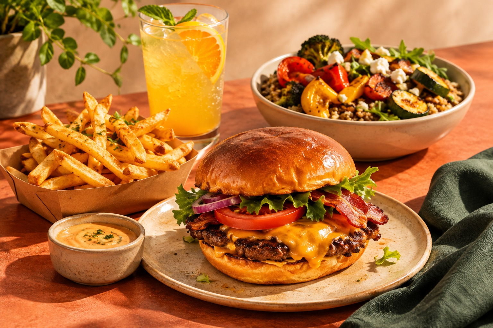
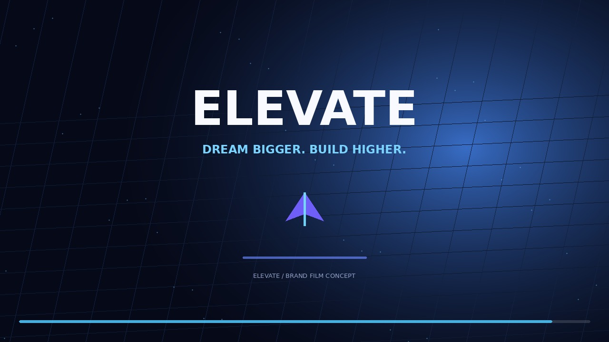

BRAND IDENTITY
01 / GRAPHIC DESIGN
Urban Bites
A complete visual identity for a modern neighborhood restaurant, from the wordmark and color system to menu design and social campaign assets.
View brand guide ↗View menu asset ↗I create visual identities, digital experiences, and motion-led stories that help brands communicate with clarity and character.
Explore selected work ↓
A complete visual identity for a modern neighborhood restaurant, from the wordmark and color system to menu design and social campaign assets.
View brand guide ↗View menu asset ↗A responsive B2B technology website concept with a dark UI system, interactive navigation, dashboard visualization, and CSS 3D-inspired hero artwork.
Open live website concept ↗Read case study ↗
A 30-second motion-graphics brand film about ambition, learning, and forward momentum, delivered in widescreen and vertical social formats.
Watch 30s brand film ↗Watch vertical cutdown ↗My background includes more than four years in technology, SaaS, business development, and customer-facing roles. I bring that understanding of business goals and audience needs into my developing creative practice across graphic design, web experiences, video, and 3D-inspired visuals.
For opportunities and creative collaborations:
Uvietaire@yahoo.com ↗Paterson, NJ · 973-262-3999